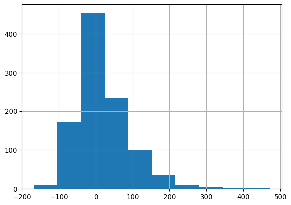

Code
import pandas as pd
import numpy as np
import matplotlib.pyplot as plt
import seaborn as sns
# Load the dataset
url = "https://github.com/Spijkervet/eurovision-dataset/releases/download/2020.0/contestants.csv"
eurovision_df = pd.read_csv(url)
In this exercise, you’ll analyze Eurovision Song Contest data using pandas. You’ll practice various data manipulation techniques and explore trends in the contest’s history.
First, import the necessary libraries and load the dataset:
import pandas as pd
import numpy as np
import matplotlib.pyplot as plt
import seaborn as sns
# Load the dataset
url = "https://github.com/Spijkervet/eurovision-dataset/releases/download/2020.0/contestants.csv"
eurovision_df = pd.read_csv(url)print(eurovision_df.head()) year to_country_id to_country performer \
0 1956 ch Switzerland Lys Assia
1 1956 nl Netherlands Jetty Paerl
2 1956 be Belgium Fud Leclerc
3 1956 de Germany Walter Andreas Schwarz
4 1956 fr France Mathé Altéry
song place_contest sf_num running_final \
0 Refrain 2.0 NaN 2.0
1 De Vogels Van Holland 2.0 NaN 1.0
2 Messieurs Les Noyés De La Seine 2.0 NaN 3.0
3 Im Wartesaal Zum Großen Glück 2.0 NaN 4.0
4 Le Temps Perdu 2.0 NaN 5.0
running_sf place_final ... place_sf points_sf points_tele_final \
0 NaN 2.0 ... NaN NaN NaN
1 NaN 2.0 ... NaN NaN NaN
2 NaN 2.0 ... NaN NaN NaN
3 NaN 2.0 ... NaN NaN NaN
4 NaN 2.0 ... NaN NaN NaN
points_jury_final points_tele_sf points_jury_sf composers \
0 NaN NaN NaN Georg Benz Stahl
1 NaN NaN NaN Cor Lemaire
2 NaN NaN NaN Jacques Say;Jean Miret
3 NaN NaN NaN Walter Andreas Schwarz
4 NaN NaN NaN André Lodge
lyricists lyrics \
0 NaN (Refrain d'amour...)\n\nRefrain, couleur du ci...
1 Annie M. G. Schmidt De vogels van Holland zijn zo muzikaal\nZe ler...
2 Robert Montal Messieurs les noyés de la Seine\nOuvrez-moi le...
3 NaN Es gibt einen Hafen, da fährt kaum ein Schiff\...
4 Rachèle Thoreau Chante, carillon\nLe chant du temps perdu\nCha...
youtube_url
0 https://youtube.com/watch?v=IyqIPvOkiRk
1 https://youtube.com/watch?v=u45UQVGRVPA
2 https://youtube.com/watch?v=U9O3sqlyra0
3 https://youtube.com/watch?v=BDNARIDnmTc
4 https://youtube.com/watch?v=dm1L0XyikKI
[5 rows x 21 columns]print(eurovision_df.dtypes)year int64
to_country_id object
to_country object
performer object
song object
place_contest float64
sf_num float64
running_final float64
running_sf float64
place_final float64
points_final float64
place_sf float64
points_sf float64
points_tele_final float64
points_jury_final float64
points_tele_sf float64
points_jury_sf float64
composers object
lyricists object
lyrics object
youtube_url object
dtype: objectprint(eurovision_df.isnull().sum())
eurovision_df = eurovision_df.fillna(0) # Fill numeric columns with 0year 0
to_country_id 0
to_country 0
performer 0
song 3
place_contest 41
sf_num 1046
running_final 282
running_sf 1081
place_final 283
points_final 295
place_sf 1081
points_sf 1081
points_tele_final 1499
points_jury_final 1499
points_tele_sf 1459
points_jury_sf 1459
composers 42
lyricists 673
lyrics 0
youtube_url 0
dtype: int64eurovision_df['year'] = pd.to_datetime(eurovision_df['year'], format='%Y')Use .copy() to make sure you create a new dataframe and not just a view.
eurovision_1990 = eurovision_df[eurovision_df['year'].dt.year >= 1990].copy().hist() command.eurovision_1990['points_difference'] = eurovision_1990['points_final'] - eurovision_1990['points_sf']
eurovision_1990['points_difference'].hist()
top_10_countries = eurovision_df['to_country'].value_counts().head(10)
print(top_10_countries)to_country
Germany 65
France 64
Belgium 63
United Kingdom 63
Netherlands 62
Switzerland 61
Sweden 60
Spain 60
Norway 59
Ireland 54
Name: count, dtype: int64avg_points_by_country = eurovision_df.groupby('to_country')['points_final'].mean().sort_values(ascending=False)
print(avg_points_by_country)to_country
Australia 210.500000
Serbia & Montenegro 200.000000
Ukraine 149.062500
Russia 144.608696
Azerbaijan 131.538462
Bulgaria 95.769231
Armenia 91.142857
Serbia 89.923077
Sweden 89.016667
Italy 79.085106
Moldova 75.437500
Israel 71.465116
Greece 70.512195
Romania 70.000000
Hungary 65.411765
Bosnia & Herzegovina 65.368421
United Kingdom 64.777778
Ireland 63.481481
Malta 59.090909
Turkey 58.705882
France 58.640625
Norway 58.457627
Denmark 58.081633
Estonia 56.307692
Cyprus 54.216216
Czech Republic 53.222222
Germany 53.000000
Netherlands 49.548387
Georgia 48.538462
Iceland 46.848485
Croatia 46.769231
Spain 46.533333
Latvia 46.238095
Albania 45.764706
Austria 42.377358
Switzerland 41.885246
Belgium 39.730159
Lithuania 39.714286
Portugal 39.480769
Luxembourg 38.459459
Yugoslavia 37.518519
Poland 35.173913
North Macedonia 33.700000
Monaco 30.750000
Finland 28.259259
Slovenia 27.884615
Belarus 21.647059
San Marino 8.272727
Montenegro 7.363636
Morocco 7.000000
Slovakia 6.000000
Andorra 0.000000
Name: points_final, dtype: float64Use value_counts() for counting appearances and groupby() for calculating averages.
When working with time series data, it’s often useful to group years into larger intervals like decades, 5-year periods, etc. Here’s a general approach using pandas:
For decades (10-year intervals):
df['decade'] = df['year'].dt.year // 10 * 10For any N-year interval:
N = 5 # Change this to your desired interval (e.g., 2, 5, 10, 20)
df['year_group'] = df['year'].dt.year // N * NFor more specific date ranges:
df['custom_group'] = pd.cut(df['year'],
bins=[1990, 1995, 2000, 2005, 2010],
labels=['1990-1994', '1995-1999', '2000-2004', '2005-2009'])Remember: - // is integer division (rounds down) - Multiplying by the interval after division ensures the start year of each group
These methods create a new column that you can use with groupby() for aggregations across your chosen time intervals.
eurovision_df['decade'] = (eurovision_df['year'].dt.year // 10) * 10
decade_winners = eurovision_df.groupby(['decade', 'to_country'])['points_final'].mean().groupby('decade').idxmax()
print(decade_winners)decade
1950 (1950, France)
1960 (1960, United Kingdom)
1970 (1970, United Kingdom)
1980 (1980, Ireland)
1990 (1990, Ireland)
2000 (2000, Serbia & Montenegro)
2010 (2010, Australia)
2020 (2020, Albania)
Name: points_final, dtype: objectpopulation_url = 'https://bit.ly/euro_pop'population_df = pd.read_csv(population_url)merged_df = pd.merge(eurovision_df, population_df, left_on='to_country', right_on='country_name')Ensure that country names match exactly between the two dataframes before joining.
Calculate total entries per capita by country.
Substeps:
3a. Create a new dataframe containing the counts of entries for each county (use value_counts)
3b. Merge the dataframe of counts of entries for each country with the population dataframe.
3c. Calculate entries per million population (using entries per million to make the numbers easier to work with)
3d. Sort the results by entries per capita
3e. Print the top 10 values
# Step 1. Count the number of records for each country
country_counts = merged_df['to_country'].value_counts().reset_index()
country_counts.columns = ['country', 'entry_count']
# Step 2. Merge the count data with the population data
country_data = country_counts.merge(population_df, left_on='country', right_on='country_name', how='left')
# Step 3. Calculate entries per capita (per million people)
country_data['entries_per_million'] = country_data['entry_count'] / (country_data['population'] / 1_000_000)
# 5. Sort the results
result = country_data.sort_values('entries_per_million', ascending=False)
# Display the top 10 countries by records per capita
print(result[['country', 'entry_count', 'population', 'entries_per_million']].head(10))
# Optional: Visualize the results
import matplotlib.pyplot as plt
plt.figure(figsize=(12, 6))
plt.bar(result['country'].loc[:10], result['entries_per_million'].loc[:10])
plt.title('Top 10 Countries by Eurovision Entries per Million Population')
plt.xlabel('Country')
plt.ylabel('Entries per Million Population')
plt.xticks(rotation=45, ha='right')
plt.tight_layout()
plt.show() country entry_count population entries_per_million
26 Monaco 24 29972 800.747364
45 San Marino 11 23186 474.424222
20 Iceland 33 255866 128.973760
48 Andorra 6 54507 110.077605
18 Luxembourg 37 381900 96.884001
21 Malta 33 352430 93.635616
17 Cyprus 37 766615 48.264122
44 Montenegro 11 615035 17.885161
24 Estonia 26 1570599 16.554194
9 Ireland 54 3515000 15.362731
yearly_max_points = eurovision_df.groupby('year')['points_final'].max()
plt.figure(figsize=(12, 6))
yearly_max_points.plot()
plt.title('Maximum Final Points Awarded by Year')
plt.xlabel('Year')
plt.ylabel('Maximum Points')
plt.show()
(This step simply requires visual interpretation of the plot, but perhaps you could explore if there are actual rules changes underlying observed patterns using google)
Come up with your own analysis of the Eurovision data that reveals some pattern across the data or through time. Feel free to discuss your ideas with others; often this leads to new ideas or refinement of ones you are already working on.
Now that you’ve completed the Eurovision data analysis exercise, it’s time to reflect on your experience. Add a new markdown cell to your notebook and answer the following questions:
Which tasks did you feel most comfortable with? Why do you think these were easier for you?
Which tasks did you find most challenging? What made these tasks difficult?
Are there any pandas commands or concepts that you’d like to explore further? List a few and briefly explain why you’re interested in them.
How do you think the skills you practiced in this exercise could be applied to other datasets or real-world problems?
What was the most interesting insight you gained about the Eurovision contest from this analysis?
Remember, reflection is a crucial part of the learning process. It helps you identify areas for improvement and reinforces what you’ve learned.
Remember to document your code, explain your reasoning, and interpret the results of your analysis throughout the exercise.